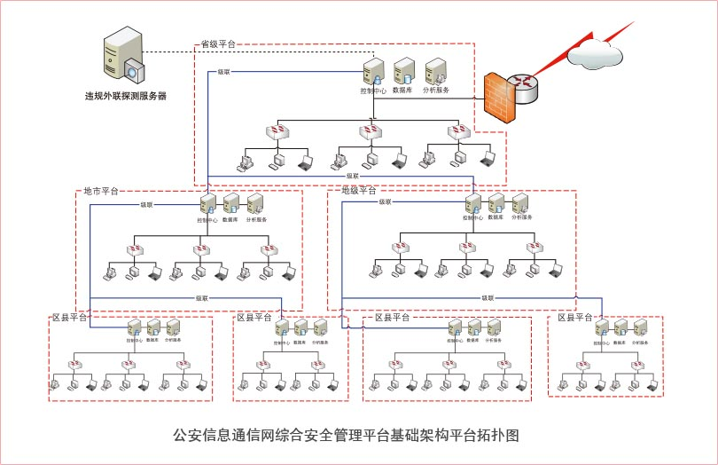

总体目标是建设河南省公安厅综合安全管理平台，全面落实公安网有关安全管理制度要求，实现河南省公安厅网络和信息安全管理工作的信息化、规范化。同时，提供有关接口，能与厅里的运维平台、网管系统、资源管理系统等相互配合，共同保障公安网安全运行。具体包括如下目标：
同时，安全管理平台提供与公安网运维/值班平台等其他系统之间的接口。
针对河南省公安厅公安信息通信网综合安全管理平台建设需求，联想提供了联想ThinkServer服务器解决方案，包括联想ThinkServer二路服务器等，为公安信息通信网综合安全管理平台系统搭建一个高效、安全的基础架构平台。基础架构平台拓扑图如下。
此方案在省厅配置4台联想ThinkServer RD630服务器 (2U 2路服务器) 用于省厅综合安全管理平台应用服务器，同时在河南省下辖17个地市，每个地市配置2台应用服务器用于平台管理、数据库和数据分析。
方案采用新一代联想ThinkServer服务器平台，支持两颗英特尔® 最新Romley平台的至强TME5-2600系列高端两路处理器，新的处理器可选支持4、6、8核，支持1.8GHz-3.3GHz或更高主频，传输带宽最高达8.0GT/s QPI，缓存容量最大支持20M，大幅度提高数据处理能力，能够满足多线程、多任务运行环境下用户对服务器性能的需求；磁盘子系统I/O性能提升，支持6Gb接口的企业级硬盘；系统集成三个千兆网络端口，并可支持扩展万兆网卡，提供了强大的网络传输及处理能力。
20个内存插槽，高达640GB内存；最大24TB的存储容量，以及按需可选8盘、16盘3.5英寸和2.5英寸硬盘的灵活性，系统最大支持5个PCI-E 3.0扩展槽，具备优异的扩展能力，可满足更广泛的应用系统配置需求。
联想ThinkServer服务器采用超缓震技术，机箱、硬盘、风扇和支架等部件都采用减震材料，并设计了减震措施，大大提高了整机运行的稳定性以及保护了硬盘数据安全；创新的架构设计和层级散热设计，优先对处理器和内存等发热量高的部件进行散热，提升了散热效率和稳定性。
系统内存支持纠错与回写技术，保证数据在内存与系统之间准确无误地传输处理；硬盘支持外插RAID卡和缓存数据掉电保护，可支持RAID 0/1/10/5/6/50/60等，有效地保障用户数据安全；电源和风扇等也冗余设计，大大提升了高可用性。
联想ThinkServer服务器集成了全新联想EasyManage服务器远程管理软件，EasyManage采用了全新的软硬件架构，符合目前服务器监控管理的业界标准－IPM (I 智能平台管理) 接口规范v2.0的服务器监控管理解决方案。EasyManage用于管理本地和远程的联想服务器，可实现服务器故障报警、批量的系统资源管理以及系统性能监控等多种功能。EasyManage采用业界领先的B/S架构，安装了EasyManage管理中心后，管理员就可以通过浏览器登录到管理中心对局域网中和可达的广域网中所有的联想ThinkServer服务器进行远程监控，轻松掌握各服务器的健康状况。当系统出现故障时，可以自动报警，并将警告事件记录到系统中。用户可以检索并分析系统中存储的事件信息，及时发现并排除系统中可能出现的故障，保证联想服务器长期稳定、可靠地运行。
EasyManage对管理员的技术水平要求不高，并且大大减轻了管理人员的劳动负担，可显著提高服务器的可管理性，缩短服务器的非正常停机时间，从而有效降低服务器的TCO (Total Cost of Ownership，总体拥有成本) 。
河南省公安厅采用联想新一代Think家族产品联想ThinkServer服务器,并结合联想服务器集中管理平台EasyManage，为河南省公安厅公安信息通信网综合安全管理平台搭建了高性能和高可用性的基础架构，很好的支撑了综合安全管理平台的高效运行；同时联想ThinkServer服务器的功耗优化技术、易用性和虚拟化特性，也有效降低了用户数据中心日常运营和运维成本。